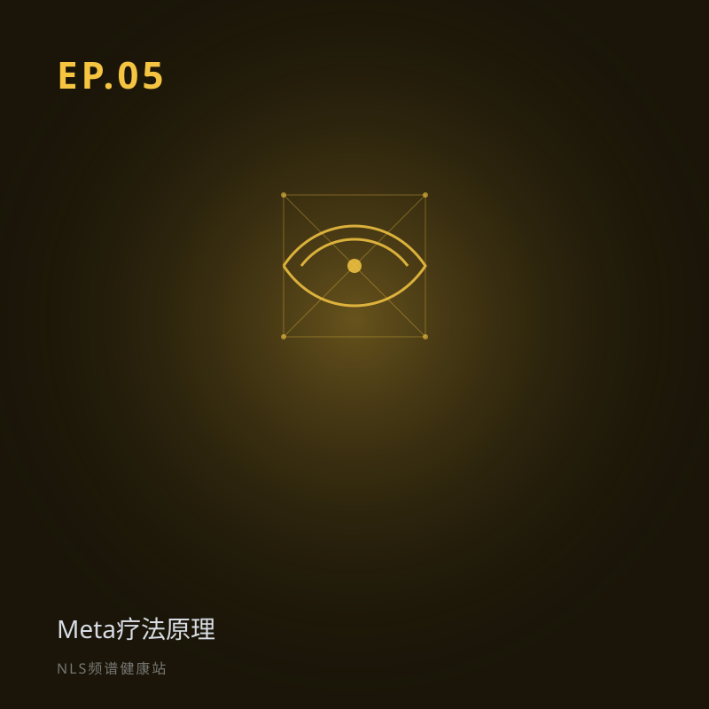

EP.05 Meta疗法原理：听懂了频率之后，如何「矫正」它
所属专题：技术原理：怎么读、怎么写
上期学会了「听懂」身体的频率。听懂之后呢？本期认识 Meta 疗法——那个拿着「标准音叉」帮身体校准音高的调音师。从降噪耳机式的反向共振，到帮细胞「开锁」的矫正机制，客观讲原理，也诚实讲局限。
Meta 疗法原理：听懂频率之后如何「矫正」。用降噪耳机讲反向共振，用调音师讲元校正，区分理论表述与可验证证据，强调补充医学定位与局限。关键词：Meta疗法、元校正、扭转场、反向共振。
分段要点
-
00:00开场：从「听懂」到「矫正」 回顾 EP04，引出 Meta 疗法。
-
03:00Meta 疗法是什么 诊断-治疗闭环；标准音叉比喻。
-
10:00元校正与扭转场 降噪耳机式反向共振；健康=低熵有序。
-
18:00四种矫正手段与适用场景 生物光子、心理情绪、顺势疗法等。
#Meta疗法#元校正#扭转场#反向共振#调音师
阅读完整文字稿（小乐 / 小思对话全文）